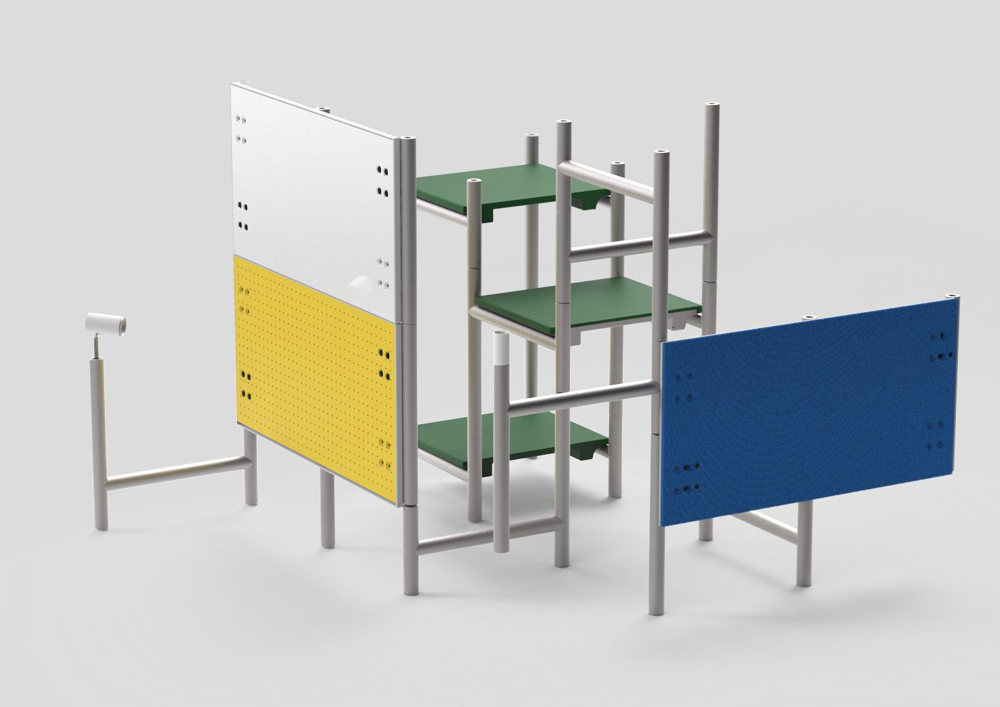
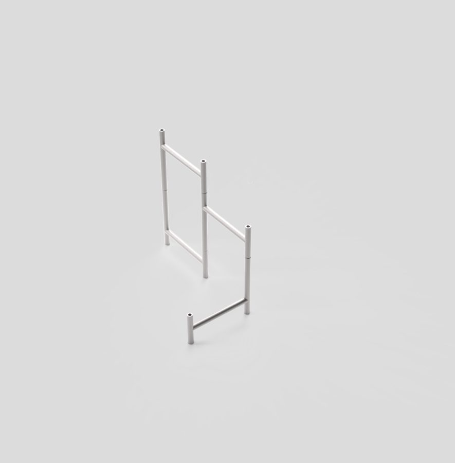
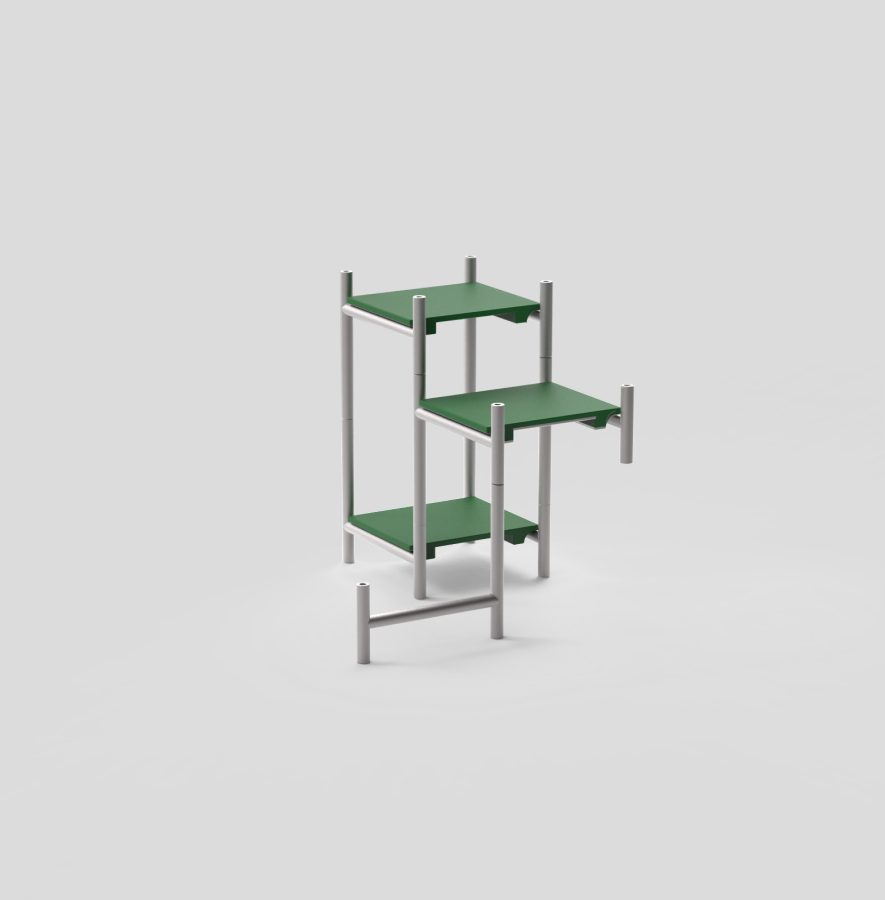
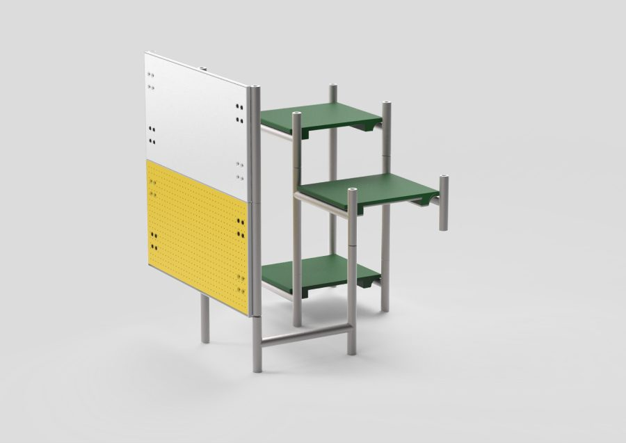
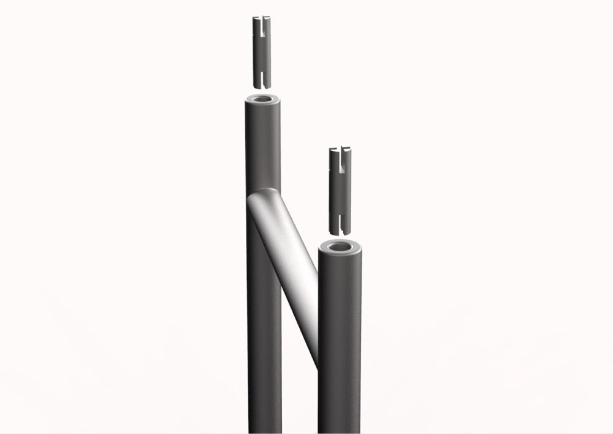
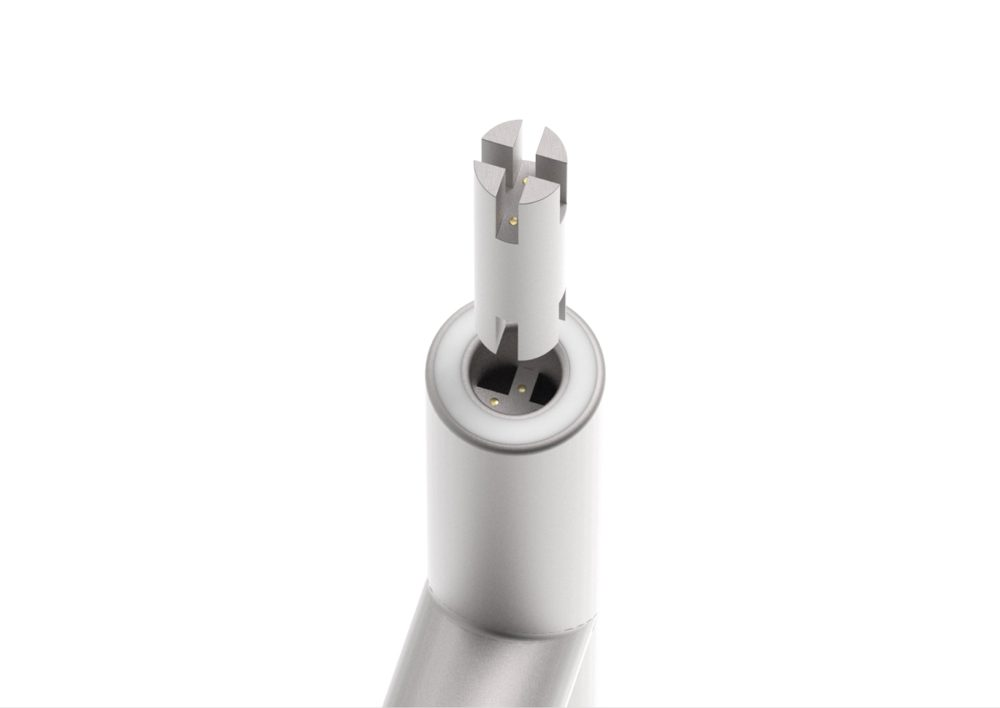
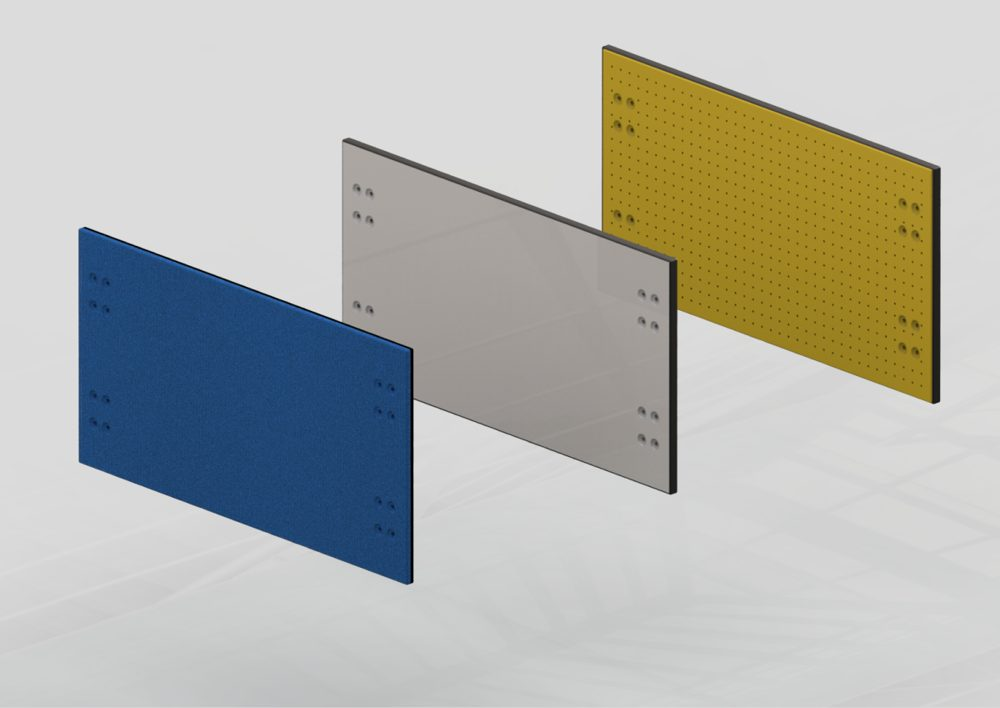
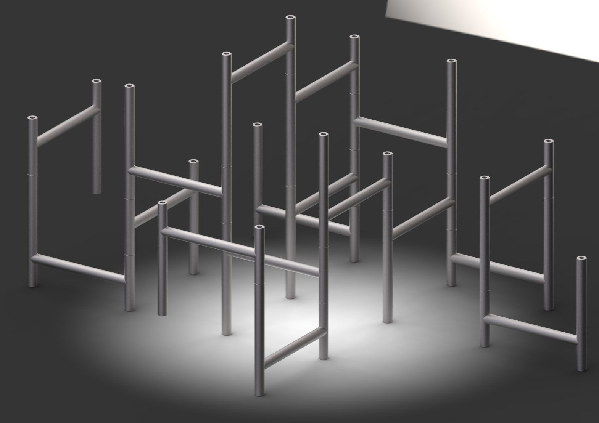

01 · Modular design
overgrwth
A modular system for creative workspaces
A creative's work is never over.
There is always something to change, add or remove on a desk that's actually being used. overgrwth is built around that cycle. Every H-frame you add opens up new layouts, and modules clip on only when you need them.
- For
- Designers and content creators
- Focus
- Spatial adaptability, customisability, workspace essentials
- Team
- Abhik Gupta, Dhawal Musale, Abhishek Vishwakarma
What I listened to while making overgrwth

Fig. 01 · The full systemKeyShot render
Fig. 02 · Grow it
It grows with your workspace.



Process
We started with primary research on creative workspaces at Oro Innovations, then mapped secondary research. That fed several rounds of sketching: H-frames with rows of holes, slotting joints, pegboards, magnetic boards, toolboxes. The bottom of the board is where the H-frame and its connector settle.


H-frameThe one structural part. Frames stack and branch off each other.

ConnectorA slotted four-prong plug joins frames and holds modules.

SurfacesSoftboard, whiteboard and pegboard clip on vertically. Shelves go horizontal.

Fig. 03 · Endless combinationsPlacing each frame is intentional and organic